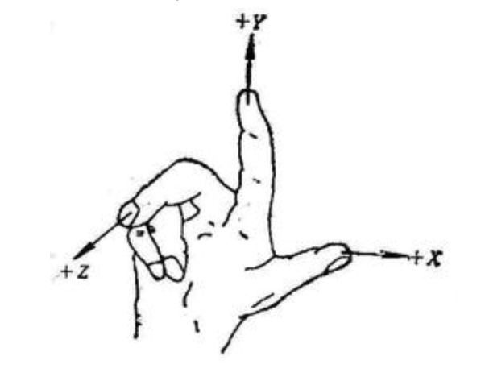

@织语长心 2019-09-27
Three.js 初探
目录（6）
- Three.js 介绍
- Three.js 基本要素
- Three.js 进阶要素
- Three.js 生态
- Three.js + Vue 模板
- Three.js 应用
一、Three.js 介绍
WebGL 的 JS 3D 库
二、Three.js 基本要素
Three.js 基本要素
框架原理

Three.js 基本要素
预备概念
- Three.js 的单位是什么？
- 没有单位，按比例绘图
- 坐标系的位置和指向？
- 右手坐标系

Three.js 基本要素
场景（scene）
——所有物体、光源、摄像机的容器
场景只有一种，用 THREE.Scene 来表示
const scene = new THREE.Scene() // 创建场景
THREE.Scene.add() // 向场景中添加对象
THREE.Scene.remove() // 从场景中移除对象
THREE.Scene.children // 遍历场景中所有子对象列表（包括摄像机&光源）
THREE.Scene.traverse(function(obj){}) // 遍历场景中所有子对象并处理以传入的方法（包括摄像机&光源）
THREE.Scene.getObjectByName(name) // 获取场景中特定的命名对象
// 雾化：
scene.fog = new THREE.Fog(0xffffff, 开始雾化处, 结束雾化处) // 开始到结束雾化浓度线性增长
scene.fog = new THREE.FogExp2(0xffffff, 雾化浓度) // 雾化浓度随距离指数增长
// 材质：
scene.overrideMaterial = new THREE.MeshLambertMaterial({color: 0xffffff}) // 使用了overrideMaterial属性后所有物体都被迫使用该材质，物体本身设置的材质无效
Three.js 基本要素
摄像机（camera）
常用的两种相机：透视投影相机 vs 正投影相机
// 正投影相机
new THREE.OrthographicCamera(left, right, top, bottom, near, far) // 视景体是一个四棱台
// 透视投影相机
new THREE.PerspectiveCamera(fov, aspect, near, far) // 视景体是一个长方体

Three.js 基本要素
渲染器（renderer）
——负责选择如何渲染出图像（使用WegGL or Canvas）
const renderer = new THREE.WebGLRenderer({
antialias: true // 抗锯齿（true 的时候稍微有一些耗性能）
alpha: true, // 背景是否透明
precision: 'highp', // 着色精度选择 [highp | mediump | lowp]
premultipliedAlpha: false, // 是否可以设置像素深度（用来度量图像分辨率）
preserveDrawingBuffer: true, // 是否保存绘图缓冲
maxLights: 3, // 最大灯光数
stencil: false // 是否使用模板字体或图案
})
renderer.setSize(width, height)
renderer.setPixelRatio(dpr)
renderer.setClearColor(0xffffff)
renderer.shadowMap.enabled = true
dom.appendChild(renderer.domElement)
Three.js 基本要素
几何体
Three.js 基本要素
光源
- AmbientLight ：环境光
- 表现相同的明暗程度
- 无法产生阴影
- PointLight ：点光源
- SpotLight ：聚光灯
- DirectionalLight ：方向光 / 平行光
- HemisphereLight ：半球光
- 无法产生阴影
- RectAreaLight ：区域光
三、Three.js 进阶要素
- 雾化
- 阴影
- loader 3D 模型
- 粒子化（❤️）
Three.js 进阶要素
雾化
const scene = new THREE.Scene()
scene.fog = new THREE.Fog(0xffffff, 开始雾化处, 结束雾化处) // 开始到结束雾化浓度线性增长
scene.fog = new THREE.FogExp2(0xffffff, 雾化浓度) // 雾化浓度随距离指数增长
Three.js 进阶要素
阴影
环境光（AmbientLight）、半球光（HemisphereLight）无法产生阴影
// 1. 渲染器启用阴影
let renderer
function initThree() {
renderer.shadowMap.enabled = true // 开启渲染器的阴影功能
// ...
}
// 2. 能产生阴影的光源阴影设置
let light
function initLight() {
light.castShadow = true // 开启该灯光的阴影效果
// ...
}
// 3. 物体们阴影参数设置
let plane
let mesh
function initObject() {
plane.receiveShadow = true // 该平面接收来自其他物体的阴影
mesh.castShadow = true // 该立方体可产生阴影
// ...
}
Three.js 进阶要素
loader 3D 模型
- 三维文件格式 abc, gltf, fbx, obj, dae, stl, 3ds, ply...
- Three.js 提供了很多 loader 方便使用，外部模型推荐 gltf 格式，使用 GLTFLoader 载入
Three.js 进阶要素
粒子化
- 创建方法1：
THREE.Sprite(material)- 粒子数量较小时，一般不会存在性能问题，可以使用 THREE.Sprite（会创建多个 THREE.Sprite 对象）
- 一个材质可以对应多种纹理
- 创建方法2：
THREE.Points(geometry, material)- 粒子数量较大时，使用 THREE.Points 更为合适（只需创建一个 THREE.Points 对象即可）
- 一个材质只能对应一种纹理
- 粒子默认形状是正方形，想改变粒子的形状，需要加载纹理
- 加载外部图片
- Canvas 2D 画布
四、Three.js 生态(插件)
- 兼容性检测
- 性能检测面板
- 可视化调参面板
- 补间动画库
- 轨迹球控件
Three.js 生态
兼容性检测
Detector.js插件功能很全：
1. 判断 canvas 兼容
2. 判断 webgl 兼容性
3. 在页面添加不兼容提示信息。
1. 判断 canvas 兼容
2. 判断 webgl 兼容性
3. 在页面添加不兼容提示信息。
// 1. 引入 Detector.js
// 2. 判断兼容
if (!Detector.webgl) {
Detector.addGetWebGLMessage()
}
Three.js 生态
性能检测面板
- fps（frames per econd）:视频 or 动画每秒显示的帧数
- 3D 程序最大的帧数是显卡支持的刷新率
- 电影以每秒 24 帧的速度播放变可满足，电视 30fps，游戏最好在 30fps 以上
// 1. 引入 stats.js
// 2. 添加性能检测
let stats
function initStats() {
stats = new Stats()
stats.showPanel(0) // 0: fps, 1: ms, 2: mb, 3+: custom
dom.appendChild(stats.dom) // document.body.appendChild(stats.dom)
}
// 3. 渲染函数添加更新
function render() {
stats.update()
// .....
requestAnimationFrame(render)
}
// 4. 函数调用
initStats()
render()
Three.js 生态
可视化调参面板
// 1. 引入 dat.gui.js
// 2. 添加调参面板
let gui
let para
function createUI() {
const Parame = function() { // 待调参数构造函数
this.speed = 2
}
para = new Parame()
gui = new dat.GUI()
gui.add(para, 'speed', 1, 10).name('speed')
}
// 3. 渲染函数添加动效
function render() {
line.position.x -= para.speed * .5
// ......
requestAnimationFrame(render)
}
// 4. 函数调用
createUI()
render()
Three.js 生态
补间动画库
// 1. 引入 tween.js
// 2. 添加补间动画
let tween
function initTween() {
tween = new TWEEN.Tween(camera.position)
.to({x: 100, z: 100}, 1500)
.easing(TWEEN.Easing.Quadratic.Out) // 默认匀速
.repeat(2) // 重复执行次数(Infinity无限循环)，共执行 n+1 次
.start()
}
Three.js 生态
轨迹球控件
// 1. 引入 OrbitControls.js
// 2. 添加轨迹控制
let controls
function initControls() {
controls = new THREE.OrbitControls(camera, renderer.domElement)
controls.enableDamping = true // 启用阻尼或自动旋转时，需要动画循环
controls.dampingFactor = 0.2 // 阻尼系数 越小则滑动越大
controls.minDistance = 50 // 最小视角
controls.maxDistance = 350 // 最大视角 Infinity 无穷大
controls.maxPolarAngle = Math.PI / 2
// ...
}
// 3. 渲染函数添更新
function render() {
controls.update()
// ...
requestAnimationFrame(render)
}
// 4. 函数调用
initControls()
render()
五、Three.js + Vue 总结模板
六、Thre.js 应用
- 全景模型
- 外部模型载入（可带动画）
- 模型粒子化